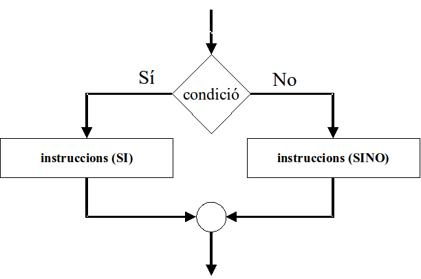

L’alternativa doble¶
«Si plou llavors treu el paraigües, sinó deixa’l a casa»
En diagrama de flux la representarem com:
En pseudocodi:
Si «condició» Llavors
«instruccions si»
Sinó
«instruccions sinó»
Fsi
En Java:
if («condició») {
«instruccions_si»
} else {
«instruccions_sino»
}
En Python:
if «condició»:
«instruccions_si»
else:
«instruccions_sino»
Com provem els nostres programes amb alternativa simple?¶
Per estar segurs que els nostres programes amb condicionals funcionen correctament, ens caldrà definir proves que passin per totes les diferents branques.
Ja hem vist que amb alternativa simple ens cal una prova quan es compleix la condició i una altra quan no.
Amb alternativa doble, i d’altres que veurem a continuació, ens caldrà una prova que garanteixi el compliment de cada condició possible. En aquest cas, una quan la codició es satisfà i una altra quan no.
Juguem una mica¶
Pràctica 1. Dos en ordre¶
Desenvolupa un programa que demani dos números i escrigui els dos números ordenats creixentment (de menor a major). Per exemple, si els números són 3 i 2, el resultat serà 2 3
Indica amb un comentari, que passa si els dos números són iguals.
Exemple d’interacció:
$ python3 dosenordre.py
Primer?
3
Segon?
2
2 i 3
Ref. IP10.2